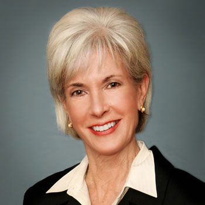

<div class="container">
	<div class="row">
        <div id="speaker-detail" class="col-lg-10 col-lg-offset-1">
            <div class="row">
            	<button title="Close (Esc)" type="button" class="mfp-close">×</button>
                
                <div class="col-md-5 col-lg-5 no-padding">
                    
                </div>
                    
                <div class="col-md-7 col-lg-7">
                    <h2>Kathleen <span>Sebelius</span></h2>
                    <p class="lead">Former US Secretary of Health & Human Services, Former KS Governor</p>
                    <!--
                    <ul class="social list-inline list-unstyled">
                    	<li><a href=""><i class="fa fa-2x fa-facebook-square"></i></a></li>
                        <li><a href=""><i class="fa fa-2x fa-twitter-square"></i></a></li>
                        <li><a href=""><i class="fa fa-2x fa-google-plus-square"></i></a></li>
                        <li><a href=""><i class="fa fa-2x fa-linkedin-square"></i></a></li>
                    </ul>
                    -->
                    
                    <div id="content">
                    	<p>Kathleen Sebelius served as the 21st Secretary of the Department of Health and Human Services under President Barack Obama, where she worked to pass and implement the Affordable Care Act. At HHS, Sebelius managed 11 operating agencies, 90,000 employees in 50 countries around the world, and a $1 trillion budget. Forbes named Sebelius one of the 100 most powerful women in the world.</p>
						<p>Sebelius served as Governor of Kansas from 2003 to 2009. Time magazine named her one of America’s Top Five Governors. Previous elected offices include two terms as the Kansas insurance commissioner and four terms in the Kansas Legislature.</p>
						<p>Sebelius earned a master of public administration degree from the University of Kansas and a bachelor of arts degree from Trinity Washington University. She is married to Gary Sebelius, a federal magistrate judge. They have two married sons, Ned and John, and two grandsons, George and Hugh.</p>
                    </div>
                </div>
            
            </div>
        </div>
    </div>
</div>